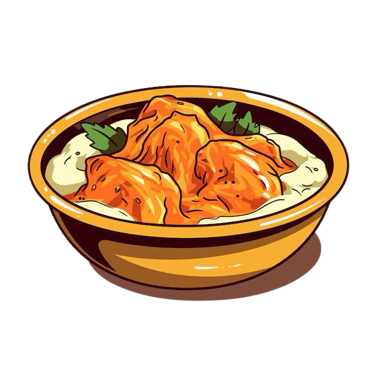

Butter Chicken Recipe
Chicken cooked in a rich, creamy tomato-based sauce.
Ingredients
For the Chicken Marinade:
- 1 pound (450g) boneless, skinless chicken thighs or breasts, cut into bite-sized pieces
- 1/2 cup (120g) plain yogurt
- 1 tablespoon lemon juice
- 2 teaspoons garam masala
- 1 teaspoon ground cumin
- 1 teaspoon ground coriander
- 1 teaspoon chili powder (adjust to taste)
- 1 teaspoon turmeric
- 1 teaspoon salt
For the Butter Sauce:
- 3 tablespoons unsalted butter
- 1 medium onion, finely chopped
- 3 garlic cloves, minced
- 1 tablespoon grated ginger
- 1 1/2 cups (360ml) tomato puree (or canned crushed tomatoes)
- 1 teaspoon chili powder (adjust to taste)
- 1 teaspoon ground cumin
- 1 teaspoon ground coriander
- 1 teaspoon garam masala
- 1/2 cup (120ml) heavy cream (or coconut milk for a dairy-free version)
- 1 teaspoon sugar (optional, to balance acidity)
- 1/4 cup (60ml) water or chicken broth (adjust for desired sauce thickness)
- Salt, to taste
- 2 tablespoons fresh cilantro, chopped (for garnish)
Preparation Time
- Prep time: 20 minutes (plus 1 hour for marination)
- Cook time: 30 minutes
- Total time: ~1 hour 50 minutes
Instructions
- Marinate the Chicken:
- In a bowl, mix yogurt, lemon juice, garam masala, cumin, coriander, chili powder, turmeric, and salt.
- Add the chicken pieces, coating them thoroughly with the marinade. Cover and refrigerate for at least 1 hour (or up to overnight for best flavor).
- Cook the Chicken:
- Heat a non-stick pan or grill pan over medium heat. Lightly oil the pan.
- Cook the marinated chicken for 3-4 minutes per side, until lightly charred and mostly cooked through. Set aside.
- Prepare the Butter Sauce:
- In a large skillet, melt the butter over medium heat. Add the chopped onion and sauté until golden brown, about 5-7 minutes.
- Stir in the garlic and ginger, and cook for 1-2 minutes until fragrant.
- Add the tomato puree, chili powder, cumin, coriander, and garam masala. Cook the mixture for 5-7 minutes, stirring occasionally, until the oil starts to separate.
- Simmer the Sauce:
- Add the cooked chicken to the skillet, along with the heavy cream, sugar (if using), and water or chicken broth. Stir to coat the chicken in the sauce.
- Simmer for 10-15 minutes on low heat, allowing the flavors to meld and the sauce to thicken slightly.
- Adjust Seasoning and Garnish:
- Taste the sauce and adjust salt or spices as needed.
- Garnish with fresh cilantro.
- Serve:
- Serve hot with steamed basmati rice, naan, or paratha.
Enjoy the creamy and flavorful Butter Chicken, a beloved Indian dish perfect for any occasion!